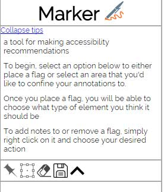
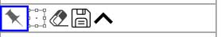
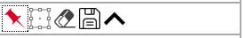
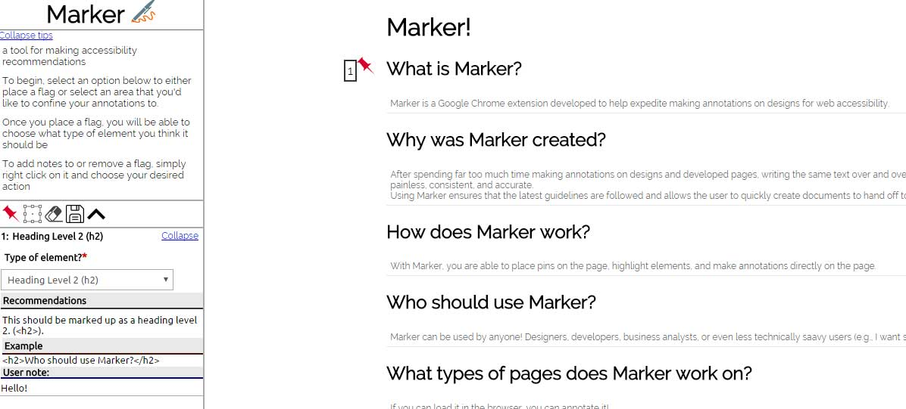
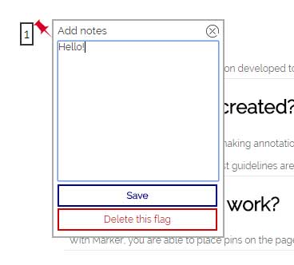
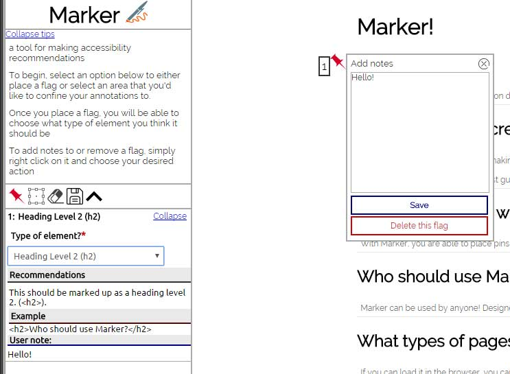

Marker!
Changing the recommendations
If you'd like to change the recommendations, you can do it here. But do keep in mind that changing the recommendations could have grave consequences.
All recommendations must keep their current formatting
Here are a few things to keep in mind:
- When writing HTML examples, use the HTML character codes for the '<', '>', and '" (double quotes)'. The codes are as follows:
- Less than (<): &lt</plaintext></li>
<li>Greater than (>): <plaintext>'&gt</plaintext></li>
</ul>
</li>
</ol>
</p>
<div id="marker_index_options">
</div>
<h2>What is Marker?</h2>
<p class="instruction">
Marker is a Google Chrome extension developed to help expedite making annotations on designs for web accessibility.
</p>
<h2>Why was Marker created?</h2>
<p class="instruction">
After spending far too much time making annotations on designs and developed pages, writing the same text over and over and over and over again, I decided to create this extension to make this process easy, painless, consistent, and accurate. <br />
Using Marker ensures that the latest guidelines are followed and allows the user to quickly create documents to hand off to developers.
</p>
<h2>How does Marker work?</h2>
<p class="instruction">
With Marker, you are able to place pins on the page, highlight elements, and make annotations directly on the page.
</p>
<h2>Who should use Marker?</h2>
<p class="instruction">
Marker can be used by anyone! Designers, developers, business analysts, or even less technically saavy users (e.g., I want someone to build me a website, but I want to make sure that it's accessible).
</p>
<h2>What types of pages does Marker work on?</h2>
<p class="instruction">
If you can load it in the browser, you can annotate it!
</p>
<h2>What am I supposed to do with the annotations?</h2>
<p class="instruction">
Once you've finished drawing your annotations on the page, you will be presented with a modal window that gives you accessibility recommendations.
</p>
<h2>What does Marker conform to?</h2>
<p class="instruction">
Marker uses WCAG 2.0 Level AA recommendations. This is the most common set of guidelines followed by Web accessibility professionals.
</p>
<h2>What do I do when I'm finished making recommendations?</h2>
<p class="instruction">
When you've completed your annotations, click the 'Save' button and a PDF will be exported.
</p>
<h2 id="howTouse">How to use Marker</h2>
<p class="instruction">
When you first start Marker, you will be presented with a frame on the left side of the screen that looks like this:<br /><br />
<br /><br />
To begin placing markers (or pins) on the page, simply click the 'Pin' icon on the left. <br /><br />
<br /><br />
It will turn red once you've activated it.<br /><br />
<br /><br />
Once you've placed a marker on the page, you will see a new area show up in the Marker panel<br /><br />
<br /><br />
Simply select the type of HTML element it should be marked up as and you will be given the associated recommendations!
<strong>Can I customize it at all?</strong><br /><br />
While you currently cannot customize the text that Marker gives you, you can add your own notes! To do this, simply right click on any of the pins on the screen and a dialog will appear that gives you the option to add a note.<br /><br />
<br /><br />
From here you can either write a note and have it save to the Marker panel, or you can delete the pin.<br /><br />
<br /><br />
<strong>Tip:</strong>
Delete the last in that you've placed on the screen. All of the pins are movable, but once you get the pins out of order they will be stuck that way.
</p>
<h2>Icon Attribution</h2>
<p class="instruction">
<div>Icons made by <a href="http://www.freepik.com" title="Freepik">Freepik</a> from <a href="http://www.flaticon.com" title="Flaticon">www.flaticon.com</a> is licensed by <a href="http://creativecommons.org/licenses/by/3.0/" title="Creative Commons BY 3.0" target="_blank">CC 3.0 BY</a></div>
</p>
<p>
<div>Icons made by <a href="http://www.flaticon.com/authors/nice-and-serious" title="Nice and Serious">Nice and Serious</a> from <a href="http://www.flaticon.com" title="Flaticon">www.flaticon.com</a> is licensed by <a href="http://creativecommons.org/licenses/by/3.0/" title="Creative Commons BY 3.0" target="_blank">CC 3.0 BY</a></div>
</p>
</div>
</body>
</html></plaintext></li></ul></li></ol></div></div>